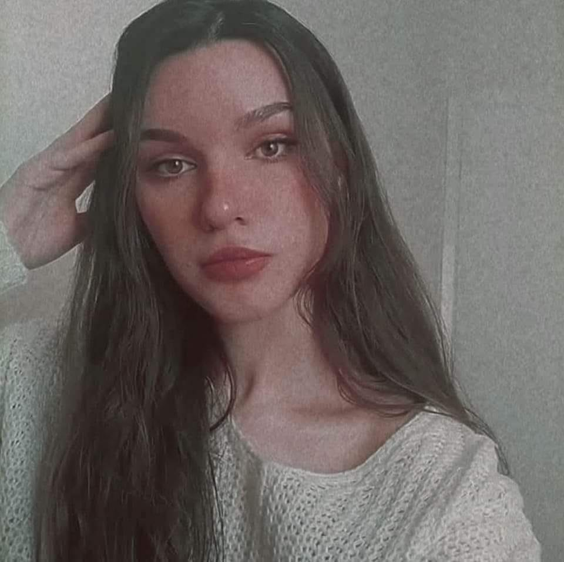

About Myself

Welcome to my page! I'm Maria Alexandra Roussopoulou, but you can call me Alexandra, like my friends do.
I'm 23 years old, from the city of Argos. I'm currently pursuing a Master's Degree in Language Technology operated by the Department of Informatics and Telecommunications of the National and Kapodistrian University of Athens (NKUA) and the Institute for Language and Speech Processing of the Athena
Research Center. This interest in linguistics isn't new; I studied Greek Language and Literature for my bachelor's degree at the University of Patras. It was during those years that I discovered my passion for coding, particularly in Python. I've since completed many courses to deepen my knowledge in this area.
A significant step in my journey was an internship at the Institute for Language and Speech Processing. This experience was crucial in deciding to further my studies in computational linguistics. Another highlight was participating in a hackathon organized by Microsoft, which was an incredible opportunity to meet and discuss ideas with people from the Balkans and Turkey.
Outside of my academic and professional life, I've taken on leadership roles in volunteering. I started as a Team Leader and then became an Event Manager for a year. One of my proud achievements was winning a competition called "Virtual C.E.O." where I had to propose virtual solutions to real-world business problems.
In my free time, I engage in activities that inspire and challenge me. I enjoy drawing, listening to music, going to the gym, and windsurfing with my family. Reading is another passion of mine; it expands my knowledge and imagination, helping me see the world from different perspectives. Visiting museums and enjoying nature, especially on sunny days with friends, are also among my favorite activities.
This mix of academic interests, professional experiences, and personal hobbies shapes who I am. I look forward to where these paths will take me in the future.
Please, visit my LinkedIn Profile for more information!